<!DOCTYPE html
  PUBLIC "-//W3C//DTD HTML 4.01 Transitional//EN">

<html><html><body><div class="banner"><a href="../../../index.html"></a></div></body></html><head>
<meta content="text/html; charset=utf-8" http-equiv="Content-Type"/>
<!--
This HTML was auto-generated from MATLAB code.
To make changes, update the MATLAB code and republish this document.
      --><title>Axially Moving Beam</title><meta content="MATLAB 9.14" name="generator"/><link href="http://purl.org/dc/elements/1.1/" rel="schema.DC"/><meta content="2023-08-31" name="DC.date"/><meta content="AxialMovingBeam.m" name="DC.source"/><style type="text/css">
html,body,div,span,applet,object,iframe,h1,h2,h3,h4,h5,h6,p,blockquote,pre,a,abbr,acronym,address,big,cite,code,del,dfn,em,font,img,ins,kbd,q,s,samp,small,strike,strong,tt,var,b,u,i,center,dl,dt,dd,ol,ul,li,fieldset,form,label,legend,table,caption,tbody,tfoot,thead,tr,th,td{margin:0;padding:0;border:0;outline:0;font-size:100%;vertical-align:baseline;background:transparent}body{line-height:1}ol,ul{list-style:none}blockquote,q{quotes:none}blockquote:before,blockquote:after,q:before,q:after{content:'';content:none}:focus{outine:0}ins{text-decoration:none}del{text-decoration:line-through}table{border-collapse:collapse;border-spacing:0}

html { min-height:100%; margin-bottom:1px; }
html body { height:100%; margin:0px; font-family:Arial, Helvetica, sans-serif; font-size:10px; color:#000; line-height:140%; background:#fff none; overflow-y:scroll; }
html body td { vertical-align:top; text-align:left; }

h1 { padding:0px; margin:0px 0px 25px; font-family:Arial, Helvetica, sans-serif; font-size:1.5em; color:#d55000; line-height:100%; font-weight:normal; }
h2 { padding:0px; margin:0px 0px 8px; font-family:Arial, Helvetica, sans-serif; font-size:1.2em; color:#000; font-weight:bold; line-height:140%; border-bottom:1px solid #d6d4d4; display:block; }
h3 { padding:0px; margin:0px 0px 5px; font-family:Arial, Helvetica, sans-serif; font-size:1.1em; color:#000; font-weight:bold; line-height:140%; }

a { color:#005fce; text-decoration:none; }
a:hover { color:#005fce; text-decoration:underline; }
a:visited { color:#004aa0; text-decoration:none; }

p { padding:0px; margin:0px 0px 20px; }
img { padding:0px; margin:0px 0px 20px; border:none; }
p img, pre img, tt img, li img, h1 img, h2 img { margin-bottom:0px; }

ul { padding:0px; margin:0px 0px 20px 23px; list-style:square; }
ul li { padding:0px; margin:0px 0px 7px 0px; }
ul li ul { padding:5px 0px 0px; margin:0px 0px 7px 23px; }
ul li ol li { list-style:decimal; }
ol { padding:0px; margin:0px 0px 20px 0px; list-style:decimal; }
ol li { padding:0px; margin:0px 0px 7px 23px; list-style-type:decimal; }
ol li ol { padding:5px 0px 0px; margin:0px 0px 7px 0px; }
ol li ol li { list-style-type:lower-alpha; }
ol li ul { padding-top:7px; }
ol li ul li { list-style:square; }

.content { font-size:1.2em; line-height:140%; padding: 20px; }

pre, code { font-size:12px; }
tt { font-size: 1.2em; }
pre { margin:0px 0px 20px; }
pre.codeinput { padding:10px; border:1px solid #d3d3d3; background:#f7f7f7; }
pre.codeoutput { padding:10px 11px; margin:0px 0px 20px; color:#4c4c4c; }
pre.error { color:red; }

@media print { pre.codeinput, pre.codeoutput { word-wrap:break-word; width:100%; } }

span.keyword { color:#0000FF }
span.comment { color:#228B22 }
span.string { color:#A020F0 }
span.untermstring { color:#B20000 }
span.syscmd { color:#B28C00 }
span.typesection { color:#A0522D }

.footer { width:auto; padding:10px 0px; margin:25px 0px 0px; border-top:1px dotted #878787; font-size:0.8em; line-height:140%; font-style:italic; color:#878787; text-align:left; float:none; }
.footer p { margin:0px; }
.footer a { color:#878787; }
.footer a:hover { color:#878787; text-decoration:underline; }
.footer a:visited { color:#878787; }

table th { padding:7px 5px; text-align:left; vertical-align:middle; border: 1px solid #d6d4d4; font-weight:bold; }
table td { padding:7px 5px; text-align:left; vertical-align:top; border:1px solid #d6d4d4; }


  </style></head><body><div class="content"><h1>Axially Moving Beam</h1><!--introduction--><!--/introduction--><h2>Contents</h2><div><ul><li><a href="#2">Nonlinear Damping</a></li><li><a href="#9">Linear Damping</a></li><li><a href="#11">Comparison of FRC with/without nonlinear damping</a></li></ul></div><p>We consider an axially moving beam under 1:3 internal resonance between the first two bending modes. The equation of motion is given by</p><p>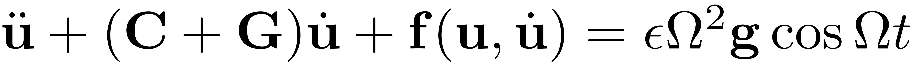</p><p>where  is a gyroscopic matrix. With viscoelastic material model, the system has nonlinear damping. In addition, the beam is subject to base excitation such that the forcing amplitude is a function of forcing frequency.</p><p>In this notebook, we will calculate the forced response curve of the system with/without the nonlinear damping taken into consideration to explore the effects of nonlinear damping</p><h2 id="2">Nonlinear Damping</h2><p>Setup Dynamical System</p><pre class="codeinput">clear <span class="string">all</span>;
n = 10;
[mass,damp,gyro,stiff,fnl,fext] = build_model(n,<span class="string">'nonlinear_damp'</span>);
</pre><pre class="codeoutput">the first four eigenvalues for undamped system

lamd =

  -0.0000 + 3.1954i
  -0.0000 - 3.1954i
  -0.0000 + 9.5862i
  -0.0000 - 9.5862i

</pre><p><b>Create model</b></p><div><ul><li>Given the assembled damping matrix  is not Rayleigh damping anymore, one should set the corresponding Options in DS to be false.</li><li>The BaseExcitation option in DS should be set true to account for the -dependent forcing amplitude.</li></ul></div><pre class="codeinput">DS = <a href="../../../Library/DynamicalSystem/DynamicalSystem.html">DynamicalSystem</a>();
set(DS,<span class="string">'M'</span>,mass,<span class="string">'C'</span>,damp+gyro,<span class="string">'K'</span>,stiff,<span class="string">'fnl'</span>,fnl);
set(DS.<a href="../../../Library/Features/Options/Options.html">Options</a>,<span class="string">'Emax'</span>,6,<span class="string">'Nmax'</span>,10,<span class="string">'notation'</span>,<span class="string">'multiindex'</span>);
set(DS.<a href="../../../Library/Features/Options/Options.html">Options</a>,<span class="string">'RayleighDamping'</span>,false,<span class="string">'BaseExcitation'</span>,true);

<span class="comment">% Forcing</span>
h = 1.5e-4; <span class="comment">% h characterizes the vibration amplitude of base excitation. It plays the role of epsilon here</span>
kappas = [-1; 1];
coeffs = [fext fext]/2;
DS.<a href="../../../Library/DynamicalSystem/add_forcing.html">add_forcing</a>(coeffs, kappas, h);
<span class="comment">% Linear Modal analysis</span>

[V,D,W] = DS.<a href="../../../Library/DynamicalSystem/linear_spectral_analysis.html">linear_spectral_analysis</a>();
</pre><pre class="codeoutput">
 The first 6 nonzero eigenvalues are given as 
  -0.0180 + 3.1954i
  -0.0180 - 3.1954i
  -0.2721 + 9.5828i
  -0.2721 - 9.5828i
  -1.3571 +19.6071i
  -1.3571 -19.6071i

</pre><p><b>Choose Master subspace</b></p><p>Due to the 1:3 internal resonance, we take the first two complex conjugate pairs of modes as the spectral subspace to SSM. So we hvae resonant_modes = [1 2 3 4].</p><pre class="codeinput">S = <a href="../../../Library/SSM/SSM.html">SSM</a>(DS);
set(S.<a href="../../../Library/Features/Options/Options.html">Options</a>, <span class="string">'reltol'</span>, 1,<span class="string">'notation'</span>,<span class="string">'multiindex'</span>);
resonant_modes = [1 2 3 4];
order = 3;
outdof = [1 2];
</pre><p><b>Primary resonance of the first mode</b></p><p>We consider the case that 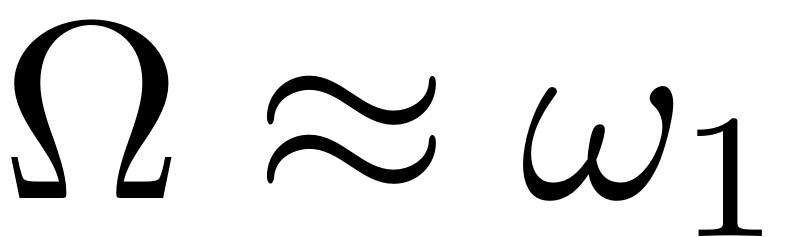. Although the second mode is not excited externally (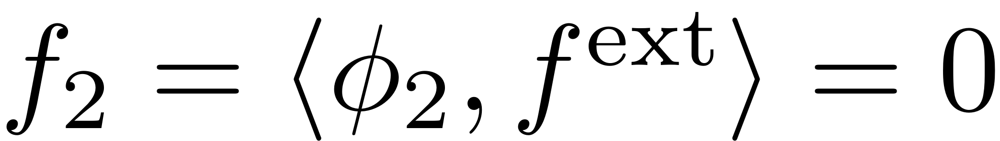), the response of the second mode is nontrivial due to the modal interactions.</p><pre class="codeinput">freqrange = [0.98 1.04]*imag(D(1));
set(S.<a href="../../../Library/Features/Options/Options.html">FRCOptions</a>, <span class="string">'nCycle'</span>,500, <span class="string">'initialSolver'</span>, <span class="string">'fsolve'</span>);
set(S.contOptions, <span class="string">'PtMX'</span>, 300, <span class="string">'h0'</span>, 0.1, <span class="string">'h_max'</span>, 0.2, <span class="string">'h_min'</span>, 1e-3);
set(S.<a href="../../../Library/Features/Options/Options.html">FRCOptions</a>, <span class="string">'coordinates'</span>, <span class="string">'polar'</span>);
</pre><p>We first compute the FRC with O(3,5,7) expansion of SSM and then check the convergence of FRC with increasing orders.</p><pre class="codeinput"><span class="comment">% O(3)</span>
start = tic;
FRC_ND_O3 = S.<a href="../../../Library/SSM/SSM_isol2ep.html">SSM_isol2ep</a>(<span class="string">'isol-nd-3'</span>,resonant_modes, order, [1 3], <span class="string">'freq'</span>, freqrange,outdof);
timings.FRC_ND_O3 = toc(start);
<span class="comment">% O(5)</span>
sol = ep_read_solution(<span class="string">'isol-nd-3.ep'</span>,1);
start = tic;
FRC_ND_O5 = S.<a href="../../../Library/SSM/SSM_isol2ep.html">SSM_isol2ep</a>(<span class="string">'isol-nd-5'</span>,resonant_modes, order+2, [1 3],<span class="keyword">...</span>
    <span class="string">'freq'</span>, freqrange,outdof,{sol.p,sol.x});
timings.FRC_ND_O5 = toc(start);
fig_ssm = gcf;
<span class="comment">% O(7)</span>
start = tic;
FRC_ND_O7 = S.<a href="../../../Library/SSM/SSM_isol2ep.html">SSM_isol2ep</a>(<span class="string">'isol-nd-7'</span>,resonant_modes, order+4, [1 3],<span class="keyword">...</span>
    <span class="string">'freq'</span>, freqrange,outdof,{sol.p,sol.x});
timings.FRC_ND_O7 = toc(start);
</pre><pre class="codeoutput">(near) outer resonance detected for the following combination of master eigenvalues
     0     0     2     0
     1     0     2     0
     0     0     3     1
     .
     .
     .
     5     2     0     3
     6     0     0     4

These are in resonance with the follwing eigenvalues of the slave subspace
  -1.3571 +19.6071i
  -1.3571 +19.6071i
  -1.3571 +19.6071i
  .
  .
  .
  -1.3571 -19.6071i
  -1.3571 -19.6071i
  -1.3571 -19.6071i

sigma_out = 75
(near) inner resonance detected for the following combination of master eigenvalues
     0     2     1     0
     1     0     1     1
     2     1     0     0
     .
     .
     6     0     0     3
     2     7     1     0
     4     6     0     0

These are in resonance with the follwing eigenvalues of the master subspace
  -0.0180 + 3.1954i
  -0.0180 + 3.1954i
  -0.0180 + 3.1954i
  .
  .
  -0.2721 - 9.5828i
  -0.2721 - 9.5828i
  -0.2721 - 9.5828i

  </pre>
<h2> Order 3 SSM Computation</h2>
<pre>
sigma_in = 75
Due to (near) outer resonance, the exisitence of the manifold is questionable and the underlying computation may suffer.
Attempting manifold computation
Manifold computation time at order 2 = 00:00:00
Estimated memory usage at order  2 = 3.63E-02 MB
Manifold computation time at order 3 = 00:00:00
Estimated memory usage at order  3 = 6.73E-02 MB

Equation solved.

fsolve completed because the vector of function values is near zero
as measured by the value of the function tolerance, and
the problem appears regular as measured by the gradient.


 Run='isol-nd-3.ep': Continue equilibria along primary branch.

    STEP   DAMPING               NORMS              COMPUTATION TIMES
  IT SIT     GAMMA     ||d||     ||f||     ||U||   F(x)  DF(x)  SOLVE
   0                          4.37e-16  1.15e+01    0.0    0.0    0.0

 STEP      TIME        ||U||  LABEL  TYPE            om         rho1         rho2          th1          th2          eps
    0  00:00:00   1.1478e+01      1  EP      3.1954e+00   2.1592e-03   2.5798e-06   4.1005e+00   6.2323e+00   1.5000e-04
   10  00:00:00   1.3116e+01      2          3.1473e+00   1.1492e-03   3.4299e-07   4.3980e+00   7.5342e+00   1.5000e-04
   13  00:00:00   1.3485e+01      3  EP      3.1315e+00   9.3460e-04   1.7140e-07   4.4563e+00   7.8265e+00   1.5000e-04

 STEP      TIME        ||U||  LABEL  TYPE            om         rho1         rho2          th1          th2          eps
    0  00:00:00   1.1478e+01      4  EP      3.1954e+00   2.1592e-03   2.5798e-06   4.1005e+00   6.2323e+00   1.5000e-04
   10  00:00:00   9.9061e+00      5          3.2333e+00   3.0311e-03   6.9840e-06   3.7729e+00   4.9372e+00   1.5000e-04
   20  00:00:01   8.3616e+00      6          3.2645e+00   3.6281e-03   1.1061e-05   3.3939e+00   3.5752e+00   1.5000e-04
   30  00:00:01   7.0729e+00      7  FP      3.2762e+00   3.7209e-03   1.1387e-05   2.9981e+00   2.3003e+00   1.5000e-04
   30  00:00:01   7.0729e+00      8  SN      3.2762e+00   3.7209e-03   1.1387e-05   2.9981e+00   2.3003e+00   1.5000e-04
   30  00:00:01   7.0035e+00      9          3.2761e+00   3.7082e-03   1.1263e-05   2.9734e+00   2.2250e+00   1.5000e-04
   40  00:00:01   5.9593e+00     10          3.2628e+00   3.0886e-03   6.6607e-06   2.5146e+00   8.8743e-01   1.5000e-04
   50  00:00:01   5.4889e+00     11  SN      3.2486e+00   1.9500e-03   1.6982e-06   2.0947e+00  -3.5064e-01   1.5000e-04
   50  00:00:01   5.4889e+00     12  FP      3.2486e+00   1.9500e-03   1.6982e-06   2.0947e+00  -3.5065e-01   1.5000e-04
   50  00:00:01   5.4804e+00     13          3.2488e+00   1.8476e-03   1.4384e-06   2.0635e+00  -4.5269e-01   1.5000e-04
   60  00:00:01   5.8787e+00     14          3.3050e+00   6.8295e-04   5.2288e-08   1.7381e+00  -1.8263e+00   1.5000e-04
   62  00:00:01   5.9804e+00     15  EP      3.3232e+00   5.8904e-04   3.0413e-08   1.7133e+00  -1.9757e+00   1.5000e-04

the forcing frequency 3.1315e+00 is nearly resonant with the eigenvalue -1.7969e-02 + i3.1954e+00
the forcing frequency 3.1324e+00 is nearly resonant with the eigenvalue -1.7969e-02 + i3.1954e+00
the forcing frequency 3.1402e+00 is nearly resonant with the eigenvalue -1.7969e-02 + i3.1954e+00
.
.
the forcing frequency 3.3217e+00 is nearly resonant with the eigenvalue -1.7969e-02 + i3.1954e+00
the forcing frequency 3.3232e+00 is nearly resonant with the eigenvalue -1.7969e-02 + i3.1954e+00

</pre>
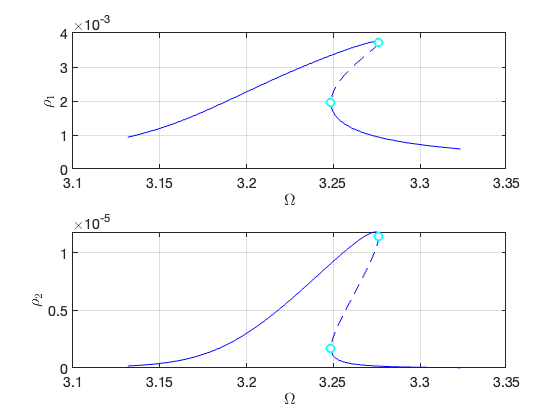 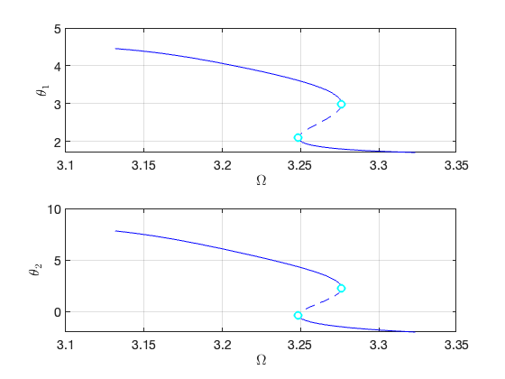  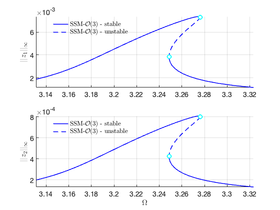
<h2> Order 5 SSM Computation</h2>
<pre class="codeoutput">

sigma_in = 75
Due to (near) outer resonance, the exisitence of the manifold is questionable and the underlying computation may suffer.
Attempting manifold computation
Manifold computation time at order 2 = 00:00:00
Estimated memory usage at order  2 = 3.85E-02 MB
Manifold computation time at order 3 = 00:00:00
Estimated memory usage at order  3 = 6.95E-02 MB
Manifold computation time at order 4 = 00:00:00
Estimated memory usage at order  4 = 1.34E-01 MB
Manifold computation time at order 5 = 00:00:00
Estimated memory usage at order  5 = 2.67E-01 MB

Equation solved, inaccuracy possible.

The vector of function values is near zero, as measured by the value
of the function tolerance. However, the last step was ineffective.


 Run='isol-nd-5.ep': Continue equilibria along primary branch.

    STEP   DAMPING               NORMS              COMPUTATION TIMES
  IT SIT     GAMMA     ||d||     ||f||     ||U||   F(x)  DF(x)  SOLVE
   0                          2.51e-13  1.15e+01    0.0    0.0    0.0

 STEP      TIME        ||U||  LABEL  TYPE            om         rho1         rho2          th1          th2          eps
    0  00:00:00   1.1467e+01      1  EP      3.1954e+00   2.1663e-03   2.6319e-06   4.0982e+00   6.2242e+00   1.5000e-04
   10  00:00:00   1.3105e+01      2          3.1476e+00   1.1554e-03   3.5008e-07   4.3963e+00   7.5260e+00   1.5000e-04
   13  00:00:00   1.3484e+01      3  EP      3.1315e+00   9.3472e-04   1.7179e-07   4.4563e+00   7.8262e+00   1.5000e-04

 STEP      TIME        ||U||  LABEL  TYPE            om         rho1         rho2          th1          th2          eps
    0  00:00:00   1.1467e+01      4  EP      3.1954e+00   2.1663e-03   2.6319e-06   4.0982e+00   6.2242e+00   1.5000e-04
   10  00:00:00   9.8949e+00      5          3.2325e+00   3.0391e-03   7.1899e-06   3.7689e+00   4.9295e+00   1.5000e-04
   20  00:00:00   8.3489e+00      6          3.2625e+00   3.6323e-03   1.1489e-05   3.3879e+00   3.5680e+00   1.5000e-04
   30  00:00:00   7.0499e+00      7  SN      3.2735e+00   3.7143e-03   1.1769e-05   2.9878e+00   2.2821e+00   1.5000e-04
   30  00:00:00   7.0499e+00      8  FP      3.2735e+00   3.7143e-03   1.1769e-05   2.9878e+00   2.2821e+00   1.5000e-04
   30  00:00:00   6.9910e+00      9          3.2734e+00   3.7029e-03   1.1652e-05   2.9668e+00   2.2180e+00   1.5000e-04
   40  00:00:00   5.9514e+00     10          3.2614e+00   3.0779e-03   6.7577e-06   2.5098e+00   8.7979e-01   1.5000e-04
   50  00:00:00   5.4902e+00     11  SN      3.2484e+00   1.9641e-03   1.7518e-06   2.0991e+00  -3.3600e-01   1.5000e-04
   50  00:00:00   5.4902e+00     12  FP      3.2484e+00   1.9641e-03   1.7517e-06   2.0991e+00  -3.3600e-01   1.5000e-04
   50  00:00:00   5.4796e+00     13          3.2486e+00   1.8388e-03   1.4285e-06   2.0608e+00  -4.6107e-01   1.5000e-04
   60  00:00:00   5.8842e+00     14          3.3059e+00   6.7742e-04   5.0824e-08   1.7367e+00  -1.8350e+00   1.5000e-04
   62  00:00:01   5.9805e+00     15  EP      3.3232e+00   5.8903e-04   3.0435e-08   1.7133e+00  -1.9758e+00   1.5000e-04

the forcing frequency 3.1315e+00 is nearly resonant with the eigenvalue -1.7969e-02 + i3.1954e+00
the forcing frequency 3.1329e+00 is nearly resonant with the eigenvalue -1.7969e-02 + i3.1954e+00
the forcing frequency 3.1407e+00 is nearly resonant with the eigenvalue -1.7969e-02 + i3.1954e+00
.
.
</pre>
  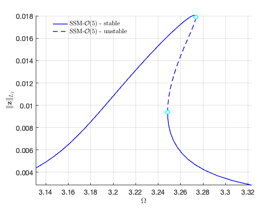 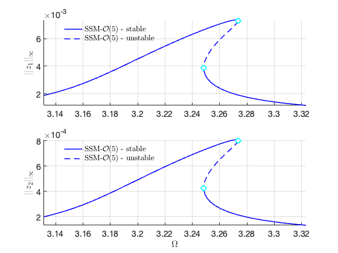
<h2> Order 7 SSM Computation</h2>
<pre class="codeoutput">

sigma_in = 75
Due to (near) outer resonance, the exisitence of the manifold is questionable and the underlying computation may suffer.
Attempting manifold computation
Manifold computation time at order 2 = 00:00:00
Estimated memory usage at order  2 = 4.25E-02 MB
Manifold computation time at order 3 = 00:00:00
Estimated memory usage at order  3 = 7.34E-02 MB
Manifold computation time at order 4 = 00:00:00
Estimated memory usage at order  4 = 1.38E-01 MB
Manifold computation time at order 5 = 00:00:00
Estimated memory usage at order  5 = 2.71E-01 MB
Manifold computation time at order 6 = 00:00:00
Estimated memory usage at order  6 = 4.66E-01 MB
Manifold computation time at order 7 = 00:00:00
Estimated memory usage at order  7 = 8.31E-01 MB

Equation solved, inaccuracy possible.

The vector of function values is near zero, as measured by the value
of the function tolerance. However, the last step was ineffective.


 Run='isol-nd-7.ep': Continue equilibria along primary branch.

    STEP   DAMPING               NORMS              COMPUTATION TIMES
  IT SIT     GAMMA     ||d||     ||f||     ||U||   F(x)  DF(x)  SOLVE
   0                          2.38e-13  1.15e+01    0.0    0.0    0.0

 STEP      TIME        ||U||  LABEL  TYPE            om         rho1         rho2          th1          th2          eps
    0  00:00:00   1.1467e+01      1  EP      3.1954e+00   2.1661e-03   2.6305e-06   4.0982e+00   6.2244e+00   1.5000e-04
   10  00:00:00   1.3106e+01      2          3.1476e+00   1.1552e-03   3.4993e-07   4.3964e+00   7.5262e+00   1.5000e-04
   13  00:00:00   1.3484e+01      3  EP      3.1315e+00   9.3472e-04   1.7179e-07   4.4563e+00   7.8262e+00   1.5000e-04

 STEP      TIME        ||U||  LABEL  TYPE            om         rho1         rho2          th1          th2          eps
    0  00:00:00   1.1467e+01      4  EP      3.1954e+00   2.1661e-03   2.6305e-06   4.0982e+00   6.2244e+00   1.5000e-04
   10  00:00:00   9.8951e+00      5          3.2326e+00   3.0390e-03   7.1791e-06   3.7690e+00   4.9297e+00   1.5000e-04
   20  00:00:00   8.3493e+00      6          3.2626e+00   3.6323e-03   1.1455e-05   3.3881e+00   3.5681e+00   1.5000e-04
   30  00:00:00   7.0523e+00      7  SN      3.2736e+00   3.7149e-03   1.1736e-05   2.9887e+00   2.2844e+00   1.5000e-04
   30  00:00:00   7.0523e+00      8  FP      3.2736e+00   3.7149e-03   1.1736e-05   2.9887e+00   2.2844e+00   1.5000e-04
   30  00:00:00   6.9914e+00      9          3.2736e+00   3.7032e-03   1.1616e-05   2.9670e+00   2.2182e+00   1.5000e-04
   40  00:00:00   5.9516e+00     10          3.2614e+00   3.0781e-03   6.7493e-06   2.5099e+00   8.7997e-01   1.5000e-04
   50  00:00:00   5.4902e+00     11  SN      3.2484e+00   1.9638e-03   1.7504e-06   2.0990e+00  -3.3633e-01   1.5000e-04
   50  00:00:00   5.4902e+00     12  FP      3.2484e+00   1.9637e-03   1.7504e-06   2.0990e+00  -3.3634e-01   1.5000e-04
   50  00:00:00   5.4797e+00     13          3.2486e+00   1.8390e-03   1.4287e-06   2.0609e+00  -4.6087e-01   1.5000e-04
   60  00:00:00   5.8841e+00     14          3.3059e+00   6.7755e-04   5.0859e-08   1.7367e+00  -1.8348e+00   1.5000e-04
   62  00:00:00   5.9805e+00     15  EP      3.3232e+00   5.8903e-04   3.0435e-08   1.7133e+00  -1.9758e+00   1.5000e-04

the forcing frequency 3.1315e+00 is nearly resonant with the eigenvalue -1.7969e-02 + i3.1954e+00
the forcing frequency 3.1329e+00 is nearly resonant with the eigenvalue -1.7969e-02 + i3.1954e+00
the forcing frequency 3.1406e+00 is nearly resonant with the eigenvalue -1.7969e-02 + i3.1954e+00


</pre> 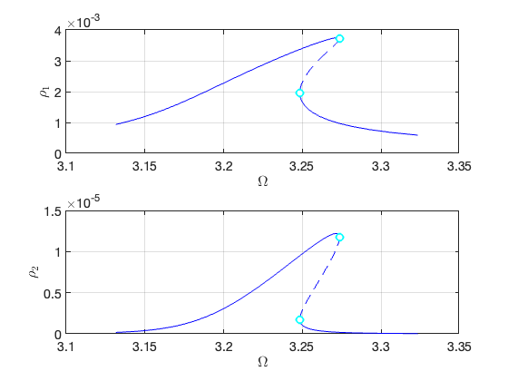 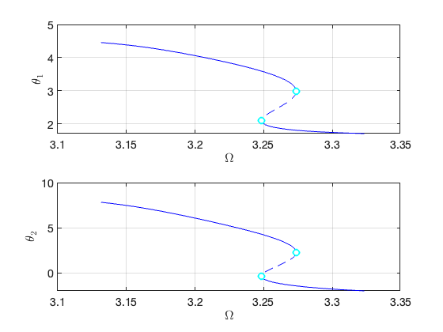   <p>Plot FRC at different orders in the same figure to observe the convergence</p><pre class="codeinput">FRCs = {FRC_ND_O3,FRC_ND_O5,FRC_ND_O7};
thm = struct();
thm.SN = {<span class="string">'LineStyle'</span>, <span class="string">'none'</span>, <span class="string">'LineWidth'</span>, 2, <span class="keyword">...</span>
  <span class="string">'Color'</span>, <span class="string">'cyan'</span>, <span class="string">'Marker'</span>, <span class="string">'o'</span>, <span class="string">'MarkerSize'</span>, 8, <span class="string">'MarkerEdgeColor'</span>, <span class="keyword">...</span>
  <span class="string">'cyan'</span>, <span class="string">'MarkerFaceColor'</span>, <span class="string">'white'</span>};
thm.HB = {<span class="string">'LineStyle'</span>, <span class="string">'none'</span>, <span class="string">'LineWidth'</span>, 2, <span class="keyword">...</span>
  <span class="string">'Color'</span>, <span class="string">'black'</span>, <span class="string">'Marker'</span>, <span class="string">'s'</span>, <span class="string">'MarkerSize'</span>, 8, <span class="string">'MarkerEdgeColor'</span>, <span class="keyword">...</span>
  <span class="string">'black'</span>, <span class="string">'MarkerFaceColor'</span>, <span class="string">'white'</span>};
color = {<span class="string">'r'</span>,<span class="string">'k'</span>,<span class="string">'b'</span>,<span class="string">'m'</span>};
figure(20);
ax1 = gca;
<span class="keyword">for</span> k=1:3
    FRC = FRCs{k};
    SNidx = FRC.SNidx;
    HBidx = FRC.HBidx;
    FRC.st = double(FRC.st);
    FRC.st(HBidx) = nan;
    FRC.st(SNidx) = nan;
    <span class="comment">% color</span>
    ST = cell(2,1);
    ST{1} = {[color{k},<span class="string">'--'</span>],<span class="string">'LineWidth'</span>,1.5}; <span class="comment">% unstable</span>
    ST{2} = {[color{k},<span class="string">'-'</span>],<span class="string">'LineWidth'</span>,1.5};  <span class="comment">% stable</span>
    legs = [<span class="string">'SSM-$\mathcal{O}('</span>,num2str(2*k+1),<span class="string">')$-unstable'</span>];
    legu = [<span class="string">'SSM-$\mathcal{O}('</span>,num2str(2*k+1),<span class="string">')$-stable'</span>];
    hold(ax1,<span class="string">'on'</span>);
    <a href="../../../Library/Features/misc/plot_stab_lines.html">plot_stab_lines</a>(FRC.om,FRC.Aout_<a href="../../../Library/Features/frc/frc.html">frc</a>(:,1),FRC.st,ST,legs,legu);
    SNfig = plot(FRC.om(SNidx),FRC.Aout_<a href="../../../Library/Features/frc/frc.html">frc</a>(SNidx,1),thm.SN{:});
    set(get(get(SNfig,<span class="string">'Annotation'</span>),<span class="string">'LegendInformation'</span>),<span class="keyword">...</span>
    <span class="string">'IconDisplayStyle'</span>,<span class="string">'off'</span>);
    HBfig = plot(FRC.om(HBidx),FRC.Aout_<a href="../../../Library/Features/frc/frc.html">frc</a>(HBidx,1),thm.HB{:});
    set(get(get(HBfig,<span class="string">'Annotation'</span>),<span class="string">'LegendInformation'</span>),<span class="keyword">...</span>
    <span class="string">'IconDisplayStyle'</span>,<span class="string">'off'</span>);
    xlabel(<span class="string">'$\Omega$'</span>,<span class="string">'Interpreter'</span>,<span class="string">'latex'</span>);
    ylabel(<span class="string">'$||u_1||_{\infty}$'</span>,<span class="string">'Interpreter'</span>,<span class="string">'latex'</span>);
    set(gca,<span class="string">'FontSize'</span>,14);
    grid <span class="string">on</span>; axis <span class="string">tight</span>;
<span class="keyword">end</span>
<span class="comment">% Validation using collocation method from COCO</span>

figure(fig_ssm); hold <span class="string">on</span>
nCycles = 500;
coco = <a href="../../../Library/Features/Wrappers/cocoWrapper/cocoWrapper.html">cocoWrapper</a>(DS, nCycles, outdof);
set(coco.<a href="../../../Library/Features/Options/Options.html">Options</a>, <span class="string">'PtMX'</span>, 1000, <span class="string">'NTST'</span>,20, <span class="string">'dir_name'</span>, <span class="string">'bd_nd'</span>);
set(coco.<a href="../../../Library/Features/Options/Options.html">Options</a>, <span class="string">'NAdapt'</span>, 0, <span class="string">'h_max'</span>, 200, <span class="string">'MaxRes'</span>, 1);
coco.initialGuess = <span class="string">'linear'</span>;
start = tic;
bd_nd = coco.<a href="../../../Library/Features/Wrappers/cocoWrapper/extract_FRC.html">extract_FRC</a>(freqrange);
timings.cocoFRCbd_nd = toc(start)
</pre><pre class="codeoutput">
 Run='bd_nd.FRC0.00015': Continue primary family of periodic orbits.

    STEP   DAMPING               NORMS              COMPUTATION TIMES
  IT SIT     GAMMA     ||d||     ||f||     ||U||   F(x)  DF(x)  SOLVE
   0                          2.90e-04  5.26e+00    0.0    0.0    0.0
   1   1  1.00e+00  4.21e-02  2.64e-05  5.26e+00    0.0    0.1    0.0
   2   1  1.00e+00  3.17e-03  3.55e-07  5.26e+00    0.0    0.2    0.0
   3   1  1.00e+00  4.42e-05  6.25e-11  5.26e+00    0.0    0.2    0.0
   4   1  1.00e+00  7.80e-09  8.88e-16  5.26e+00    0.0    0.3    0.0

 STEP      TIME        ||U||  LABEL  TYPE         omega    po.period          eps         amp1         amp2
    0  00:00:01   5.2599e+00      1  EP      3.1315e+00   2.0064e+00   1.5000e-04   1.8748e-03   1.9789e-04
   10  00:00:05   5.3338e+00      2          3.2294e+00   1.9456e+00   1.5000e-04   5.8545e-03   6.3780e-04
   20  00:00:10   5.3635e+00      3          3.2661e+00   1.9238e+00   1.5000e-04   7.2225e-03   7.8958e-04
   26  00:00:15   5.3682e+00      4  SN      3.2720e+00   1.9203e+00   1.5000e-04   7.2282e-03   7.9137e-04
   26  00:00:15   5.3682e+00      5  FP      3.2720e+00   1.9203e+00   1.5000e-04   7.2282e-03   7.9137e-04
   30  00:00:17   5.3649e+00      6          3.2682e+00   1.9225e+00   1.5000e-04   6.7607e-03   7.4076e-04
   40  00:00:21   5.3483e+00      7          3.2491e+00   1.9338e+00   1.5000e-04   4.4414e-03   4.8801e-04
   42  00:00:25   5.3472e+00      8  FP      3.2480e+00   1.9345e+00   1.5000e-04   3.8834e-03   4.2738e-04
   42  00:00:25   5.3472e+00      9  SN      3.2480e+00   1.9345e+00   1.5000e-04   3.8832e-03   4.2735e-04
   50  00:00:28   5.3727e+00     10          3.2809e+00   1.9151e+00   1.5000e-04   1.7174e-03   1.9240e-04
   54  00:00:30   5.4072e+00     11  EP      3.3232e+00   1.8907e+00   1.5000e-04   1.1458e-03   1.3070e-04

timings = 

  struct with fields:

       FRC_ND_O3: 6.2155
       FRC_ND_O5: 3.1502
       FRC_ND_O7: 3.2323
    cocoFRCbd_nd: 31.8611

</pre>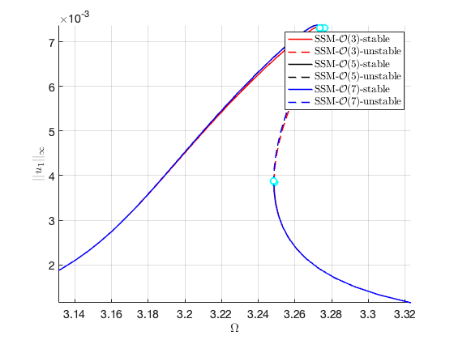 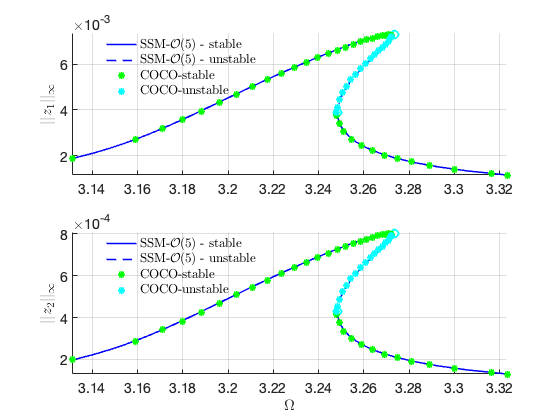 <h2 id="9">Linear Damping</h2><p><b>Setup Dynamical System</b></p><pre class="codeinput">n = 10;
[mass,damp,gyro,stiff,fnl,fext] = build_model(n,<span class="string">'linear_damp'</span>);

<span class="comment">% Create model</span>
DS = <a href="../../../Library/DynamicalSystem/DynamicalSystem.html">DynamicalSystem</a>();
set(DS,<span class="string">'M'</span>,mass,<span class="string">'C'</span>,damp+gyro,<span class="string">'K'</span>,stiff,<span class="string">'fnl'</span>,fnl);
set(DS.<a href="../../../Library/Features/Options/Options.html">Options</a>,<span class="string">'Emax'</span>,6,<span class="string">'Nmax'</span>,10,<span class="string">'notation'</span>,<span class="string">'multiindex'</span>);
set(DS.<a href="../../../Library/Features/Options/Options.html">Options</a>,<span class="string">'RayleighDamping'</span>,false,<span class="string">'BaseExcitation'</span>,true);
DS.<a href="../../../Library/DynamicalSystem/add_forcing.html">add_forcing</a>(coeffs, kappas, h);
<span class="comment">% Linear Modal analysis</span>

[V,D,W] = DS.<a href="../../../Library/DynamicalSystem/linear_spectral_analysis.html">linear_spectral_analysis</a>();
</pre><pre class="codeoutput">the first four eigenvalues for undamped system

lamd =

  -0.0000 + 3.1954i
  -0.0000 - 3.1954i
  -0.0000 + 9.5862i
  -0.0000 - 9.5862i


 The first 6 nonzero eigenvalues are given as 
  -0.0180 + 3.1954i
  -0.0180 - 3.1954i
  -0.2721 + 9.5828i
  -0.2721 - 9.5828i
  -1.3571 +19.6071i
  -1.3571 -19.6071i

</pre><p><b>Choose Master subspace</b></p><pre class="codeinput">S = <a href="../../../Library/SSM/SSM.html">SSM</a>(DS);
set(S.<a href="../../../Library/Features/Options/Options.html">Options</a>, <span class="string">'reltol'</span>, 1,<span class="string">'notation'</span>,<span class="string">'multiindex'</span>);
resonant_modes = [1 2 3 4];
order = 5;
outdof = [1 2];
<span class="comment">% Primary resonance of the first mode</span>

freqrange = [0.98 1.04]*imag(D(1));
set(S.<a href="../../../Library/Features/Options/Options.html">FRCOptions</a>, <span class="string">'nCycle'</span>,500, <span class="string">'initialSolver'</span>, <span class="string">'fsolve'</span>);
set(S.contOptions, <span class="string">'PtMX'</span>, 300, <span class="string">'h0'</span>, 0.1, <span class="string">'h_max'</span>, 0.2, <span class="string">'h_min'</span>, 1e-3);
set(S.<a href="../../../Library/Features/Options/Options.html">FRCOptions</a>, <span class="string">'coordinates'</span>, <span class="string">'polar'</span>);

sol = ep_read_solution(<span class="string">'isol-nd-3.ep'</span>,1);
start = tic;
FRC_LD_O5 = S.<a href="../../../Library/SSM/SSM_isol2ep.html">SSM_isol2ep</a>(<span class="string">'isol-ld-5'</span>,resonant_modes, order, [1 3],<span class="keyword">...</span>
    <span class="string">'freq'</span>, freqrange,outdof,{sol.p,sol.x});
timings.FRC_LD_O5 = toc(start);
<span class="comment">% validation using collocation method from COCO</span>

nCycles = 500;
coco = <a href="../../../Library/Features/Wrappers/cocoWrapper/cocoWrapper.html">cocoWrapper</a>(DS, nCycles, outdof);
set(coco.<a href="../../../Library/Features/Options/Options.html">Options</a>, <span class="string">'PtMX'</span>, 1000, <span class="string">'NTST'</span>,20, <span class="string">'dir_name'</span>, <span class="string">'bd_ld'</span>);
set(coco.<a href="../../../Library/Features/Options/Options.html">Options</a>, <span class="string">'NAdapt'</span>, 0, <span class="string">'h_max'</span>, 200, <span class="string">'MaxRes'</span>, 1);
coco.initialGuess = <span class="string">'linear'</span>;
start = tic;
bd_ld = coco.<a href="../../../Library/Features/Wrappers/cocoWrapper/extract_FRC.html">extract_FRC</a>(freqrange);
timings.cocoFRCbd_ld = toc(start)
</pre><pre class="codeoutput">(near) outer resonance detected for the following combination of master eigenvalues
     0     0     2     0
     1     0     2     0
     0     0     3     1
     . 
     .
     4     4     0     2
     5     2     0     3
     6     0     0     4

These are in resonance with the follwing eigenvalues of the slave subspace
  -1.3571 +19.6071i
  -1.3571 +19.6071i
  -1.3571 +19.6071i
  . 
  . 
  -1.3571 -19.6071i
  -1.3571 -19.6071i
  -1.3571 -19.6071i

sigma_out = 75
(near) inner resonance detected for the following combination of master eigenvalues
     0     2     1     0
     1     0     1     1
     2     1     0     0
     . 
     .
     6     0     0     3
     2     7     1     0
     4     6     0     0

These are in resonance with the follwing eigenvalues of the master subspace
  -0.0180 + 3.1954i
  -0.0180 + 3.1954i
  -0.0180 + 3.1954i
   . 
   .
  -0.2721 - 9.5828i
  -0.2721 - 9.5828i
  -0.2721 - 9.5828i

</pre>
<h2> Order  5 SSM Computation</h2>
<pre>
sigma_in = 75
Due to (near) outer resonance, the exisitence of the manifold is questionable and the underlying computation may suffer.
Attempting manifold computation
Manifold computation time at order 2 = 00:00:00
Estimated memory usage at order  2 = 3.18E-02 MB
Manifold computation time at order 3 = 00:00:00
Estimated memory usage at order  3 = 6.27E-02 MB
Manifold computation time at order 4 = 00:00:00
Estimated memory usage at order  4 = 1.27E-01 MB
Manifold computation time at order 5 = 00:00:00
Estimated memory usage at order  5 = 2.60E-01 MB

Equation solved.

fsolve completed because the vector of function values is near zero
as measured by the value of the function tolerance, and
the problem appears regular as measured by the gradient.


 Run='isol-ld-5.ep': Continue equilibria along primary branch.

    STEP   DAMPING               NORMS              COMPUTATION TIMES
  IT SIT     GAMMA     ||d||     ||f||     ||U||   F(x)  DF(x)  SOLVE
   0                          8.42e-16  1.15e+01    0.0    0.0    0.0

 STEP      TIME        ||U||  LABEL  TYPE            om         rho1         rho2          th1          th2          eps
    0  00:00:00   1.1463e+01      1  EP      3.1954e+00   2.1730e-03   2.6567e-06   4.1120e+00   6.2114e+00   1.5000e-04
   10  00:00:00   1.3097e+01      2          3.1458e+00   1.1279e-03   3.2286e-07   4.4058e+00   7.5141e+00   1.5000e-04
   12  00:00:00   1.3425e+01      3  EP      3.1315e+00   9.3493e-04   1.7173e-07   4.4573e+00   7.7748e+00   1.5000e-04

 STEP      TIME        ||U||  LABEL  TYPE            om         rho1         rho2          th1          th2          eps
    0  00:00:00   1.1463e+01      4  EP      3.1954e+00   2.1730e-03   2.6567e-06   4.1120e+00   6.2114e+00   1.5000e-04
   10  00:00:00   9.8985e+00      5          3.2357e+00   3.1334e-03   7.8609e-06   3.7899e+00   4.9150e+00   1.5000e-04
   20  00:00:00   8.3650e+00      6          3.2708e+00   3.8522e-03   1.3465e-05   3.4171e+00   3.5513e+00   1.5000e-04
   30  00:00:00   7.1056e+00      7  FP      3.2844e+00   4.0076e-03   1.4408e-05   3.0299e+00   2.2973e+00   1.5000e-04
   30  00:00:00   7.1056e+00      8  SN      3.2844e+00   4.0076e-03   1.4408e-05   3.0299e+00   2.2973e+00   1.5000e-04
   30  00:00:00   7.0169e+00      9          3.2843e+00   3.9914e-03   1.4218e-05   2.9981e+00   2.2008e+00   1.5000e-04
   40  00:00:00   5.9733e+00     10          3.2672e+00   3.2849e-03   8.1210e-06   2.5332e+00   8.6532e-01   1.5000e-04
   50  00:00:00   5.4937e+00     11  FP      3.2486e+00   1.9522e-03   1.7168e-06   2.0846e+00  -4.3764e-01   1.5000e-04
   50  00:00:00   5.4937e+00     12  SN      3.2486e+00   1.9521e-03   1.7168e-06   2.0846e+00  -4.3765e-01   1.5000e-04
   50  00:00:00   5.4914e+00     13          3.2486e+00   1.9156e-03   1.6195e-06   2.0740e+00  -4.7197e-01   1.5000e-04
   60  00:00:00   5.8894e+00     14          3.3011e+00   7.0769e-04   5.9444e-08   1.7442e+00  -1.8447e+00   1.5000e-04
   62  00:00:00   6.0174e+00     15  EP      3.3232e+00   5.8906e-04   3.0403e-08   1.7131e+00  -2.0313e+00   1.5000e-04

the forcing frequency 3.1315e+00 is nearly resonant with the eigenvalue -1.7969e-02 + i3.1954e+00
the forcing frequency 3.1386e+00 is nearly resonant with the eigenvalue -1.7969e-02 + i3.1954e+00
the forcing frequency 3.1458e+00 is nearly resonant with the eigenvalue -1.7969e-02 + i3.1954e+00
...

 Run='bd_ld.FRC0.00015': Continue primary family of periodic orbits.

    STEP   DAMPING               NORMS              COMPUTATION TIMES
  IT SIT     GAMMA     ||d||     ||f||     ||U||   F(x)  DF(x)  SOLVE
   0                          2.90e-04  5.26e+00    0.0    0.0    0.0
   1   1  1.00e+00  4.21e-02  2.64e-05  5.26e+00    0.0    0.0    0.0
   2   1  1.00e+00  3.17e-03  3.55e-07  5.26e+00    0.0    0.1    0.0
   3   1  1.00e+00  4.42e-05  6.19e-11  5.26e+00    0.0    0.1    0.0
   4   1  1.00e+00  7.74e-09  8.88e-16  5.26e+00    0.0    0.1    0.0

 STEP      TIME        ||U||  LABEL  TYPE         omega    po.period          eps         amp1         amp2
    0  00:00:00   5.2599e+00      1  EP      3.1315e+00   2.0064e+00   1.5000e-04   1.8752e-03   1.9793e-04
   10  00:00:03   5.3386e+00      2          3.2354e+00   1.9420e+00   1.5000e-04   6.1597e-03   6.7089e-04
   20  00:00:06   5.3722e+00      3          3.2764e+00   1.9177e+00   1.5000e-04   7.7132e-03   8.4203e-04
   26  00:00:10   5.3769e+00      4  SN      3.2822e+00   1.9143e+00   1.5000e-04   7.7583e-03   8.4859e-04
   26  00:00:10   5.3769e+00      5  FP      3.2822e+00   1.9143e+00   1.5000e-04   7.7583e-03   8.4859e-04
   30  00:00:12   5.3724e+00      6          3.2772e+00   1.9172e+00   1.5000e-04   7.2829e-03   7.9727e-04
   40  00:00:14   5.3520e+00      7          3.2534e+00   1.9313e+00   1.5000e-04   5.1319e-03   5.6288e-04
   44  00:00:18   5.3474e+00      8  FP      3.2482e+00   1.9343e+00   1.5000e-04   3.8587e-03   4.2476e-04
   44  00:00:18   5.3474e+00      9  SN      3.2482e+00   1.9343e+00   1.5000e-04   3.8585e-03   4.2474e-04
   50  00:00:20   5.3628e+00     10          3.2685e+00   1.9223e+00   1.5000e-04   2.0450e-03   2.2805e-04
   56  00:00:21   5.4072e+00     11  EP      3.3232e+00   1.8907e+00   1.5000e-04   1.1459e-03   1.3070e-04

timings = 

  struct with fields:

       FRC_ND_O3: 6.2155
       FRC_ND_O5: 3.1502
       FRC_ND_O7: 3.2323
    cocoFRCbd_nd: 31.8611
       FRC_LD_O5: 2.3849
    cocoFRCbd_ld: 24.0015

</pre>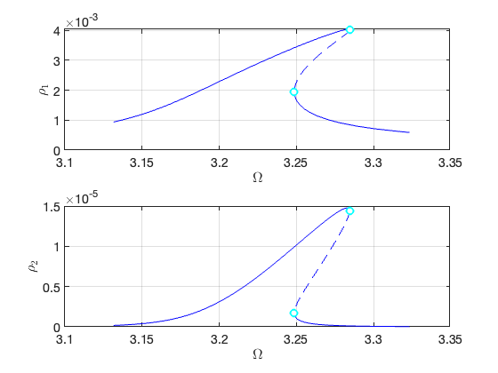 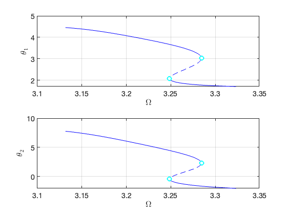 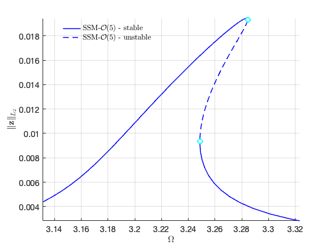 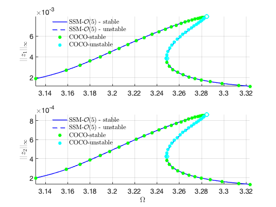 <h2 id="11">Comparison of FRC with/without nonlinear damping</h2><pre class="codeinput"><span class="comment">% plot SSM results</span>
FRCs = {FRC_LD_O5,FRC_ND_O5};
legs = {<span class="string">'LD-SSM-$\mathcal{O}(5)$-unstable'</span>,<span class="string">'ND-SSM-$\mathcal{O}(5)$-unstable'</span>};
legu = {<span class="string">'LD-SSM-$\mathcal{O}(5)$-stable'</span>,<span class="string">'ND-SSM-$\mathcal{O}(5)$-stable'</span>};
color = {<span class="string">'r'</span>,<span class="string">'b'</span>};
fig25 = figure;
fig26 = figure;
<span class="keyword">for</span> k=1:2
    FRC = FRCs{k};
    SNidx = FRC.SNidx;
    HBidx = FRC.HBidx;
    FRC.st = double(FRC.st);
    FRC.st(HBidx) = nan;
    FRC.st(SNidx) = nan;
    <span class="comment">% color</span>
    ST = cell(2,1);
    ST{1} = {[color{k},<span class="string">'--'</span>],<span class="string">'LineWidth'</span>,1.5}; <span class="comment">% unstable</span>
    ST{2} = {[color{k},<span class="string">'-'</span>],<span class="string">'LineWidth'</span>,1.5};  <span class="comment">% stable</span>
    figure(fig25); hold <span class="string">on</span>
    <a href="../../../Library/Features/misc/plot_stab_lines.html">plot_stab_lines</a>(FRC.om,FRC.Aout_<a href="../../../Library/Features/frc/frc.html">frc</a>(:,1),FRC.st,ST,legs{k},legu{k});
    SNfig = plot(FRC.om(SNidx),FRC.Aout_<a href="../../../Library/Features/frc/frc.html">frc</a>(SNidx,1),thm.SN{:});
    set(get(get(SNfig,<span class="string">'Annotation'</span>),<span class="string">'LegendInformation'</span>),<span class="keyword">...</span>
    <span class="string">'IconDisplayStyle'</span>,<span class="string">'off'</span>);
    xlabel(<span class="string">'$\Omega$'</span>,<span class="string">'Interpreter'</span>,<span class="string">'latex'</span>);
    ylabel(<span class="string">'$||u_1||_{\infty}$'</span>,<span class="string">'Interpreter'</span>,<span class="string">'latex'</span>);
    set(gca,<span class="string">'FontSize'</span>,14);
    grid <span class="string">on</span>, axis <span class="string">tight</span>;
    legend <span class="string">boxoff</span>;
    figure(fig26); hold <span class="string">on</span>
    <a href="../../../Library/Features/misc/plot_stab_lines.html">plot_stab_lines</a>(FRC.om,FRC.Aout_<a href="../../../Library/Features/frc/frc.html">frc</a>(:,2),FRC.st,ST,legs{k},legu{k});
    SNfig = plot(FRC.om(SNidx),FRC.Aout_<a href="../../../Library/Features/frc/frc.html">frc</a>(SNidx,2),thm.SN{:});
    set(get(get(SNfig,<span class="string">'Annotation'</span>),<span class="string">'LegendInformation'</span>),<span class="keyword">...</span>
    <span class="string">'IconDisplayStyle'</span>,<span class="string">'off'</span>);
    xlabel(<span class="string">'$\Omega$'</span>,<span class="string">'Interpreter'</span>,<span class="string">'latex'</span>);
    ylabel(<span class="string">'$||u_2||_{\infty}$'</span>,<span class="string">'Interpreter'</span>,<span class="string">'latex'</span>);
    set(gca,<span class="string">'FontSize'</span>,14);
    grid <span class="string">on</span>; axis <span class="string">tight</span>;
    legend <span class="string">boxoff</span>
<span class="keyword">end</span>

<span class="comment">% load coco solution</span>
legs = {<span class="string">'LD-Collocation-unstable'</span>,<span class="string">'ND-Collocation-unstable'</span>};
legu = {<span class="string">'LD-Collocation-stable'</span>,<span class="string">'ND-Collocation-stable'</span>};

bd = bd_nd{:};
ndom   = coco_bd_col(bd,<span class="string">'omega'</span>);
ndamp1 = coco_bd_col(bd, <span class="string">'amp1'</span>);
ndamp2 = coco_bd_col(bd, <span class="string">'amp2'</span>);
ndst   = coco_bd_col(bd, <span class="string">'eigs'</span>);
ndst = all(abs(ndst)&lt;1,1);
logs  = [1 2 3 4:3:numel(ndst)-4 numel(ndst)-1 numel(ndst)];
ndamp1 = ndamp1(logs);
ndamp2 = ndamp2(logs);
ndom = ndom(logs);
ndst = ndst(logs);
figure(fig25); hold <span class="string">on</span>
plot(ndom(ndst), ndamp1(ndst), <span class="string">'ro'</span>, <span class="string">'MarkerSize'</span>, 6, <span class="string">'LineWidth'</span>, 1,<span class="keyword">...</span>
    <span class="string">'DisplayName'</span>, <span class="string">'ND-Collocation-stable'</span>);
plot(ndom(~ndst), ndamp1(~ndst), <span class="string">'ms'</span>, <span class="string">'MarkerSize'</span>, 6, <span class="string">'LineWidth'</span>, 1,<span class="keyword">...</span>
    <span class="string">'DisplayName'</span>, <span class="string">'ND-Collocation-unstable'</span>);
figure(fig26); hold <span class="string">on</span>
plot(ndom(ndst), ndamp2(ndst), <span class="string">'ro'</span>, <span class="string">'MarkerSize'</span>, 6, <span class="string">'LineWidth'</span>, 1,<span class="keyword">...</span>
    <span class="string">'DisplayName'</span>, <span class="string">'ND-Collocation-stable'</span>);
plot(ndom(~ndst), ndamp2(~ndst), <span class="string">'ms'</span>, <span class="string">'MarkerSize'</span>, 6, <span class="string">'LineWidth'</span>, 1,<span class="keyword">...</span>
    <span class="string">'DisplayName'</span>, <span class="string">'ND-Collocation-unstable'</span>);

bd = bd_ld{:};
ldom   = coco_bd_col(bd,<span class="string">'omega'</span>);
ldamp1 = coco_bd_col(bd, <span class="string">'amp1'</span>);
ldamp2 = coco_bd_col(bd, <span class="string">'amp2'</span>);
ldst   = coco_bd_col(bd, <span class="string">'eigs'</span>);
ldst = all(abs(ldst)&lt;1,1);
logs  = [1 2 3 4:3:numel(ldst)-4 numel(ldst)-1 numel(ldst)];
ldamp1 = ldamp1(logs);
ldamp2 = ldamp2(logs);
ldom = ldom(logs);
ldst = ldst(logs);
figure(fig25); hold <span class="string">on</span>
plot(ldom(ldst), ldamp1(ldst), <span class="string">'kd'</span>, <span class="string">'MarkerSize'</span>, 6, <span class="string">'LineWidth'</span>, 1,<span class="keyword">...</span>
    <span class="string">'DisplayName'</span>, <span class="string">'LD-Collocation-stable'</span>);
plot(ldom(~ldst), ldamp1(~ldst), <span class="string">'gv'</span>, <span class="string">'MarkerSize'</span>, 6, <span class="string">'LineWidth'</span>, 1,<span class="keyword">...</span>
    <span class="string">'DisplayName'</span>, <span class="string">'LD-Collocation-unstable'</span>);
figure(fig26); hold <span class="string">on</span>
plot(ldom(ldst), ldamp2(ldst), <span class="string">'kd'</span>, <span class="string">'MarkerSize'</span>, 6, <span class="string">'LineWidth'</span>, 1,<span class="keyword">...</span>
    <span class="string">'DisplayName'</span>, <span class="string">'LD-Collocation-stable'</span>);
plot(ldom(~ldst), ldamp2(~ldst), <span class="string">'gv'</span>, <span class="string">'MarkerSize'</span>, 6, <span class="string">'LineWidth'</span>, 1,<span class="keyword">...</span>
    <span class="string">'DisplayName'</span>, <span class="string">'LD-Collocation-unstable'</span>);
</pre>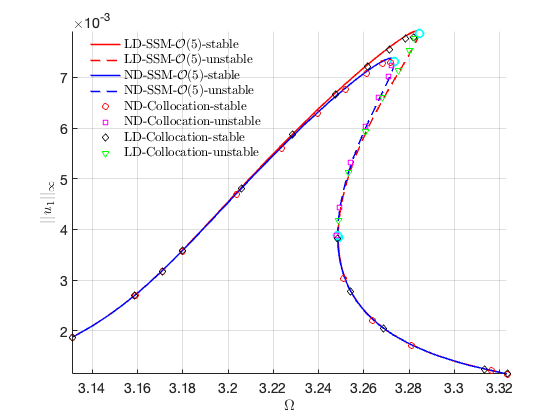 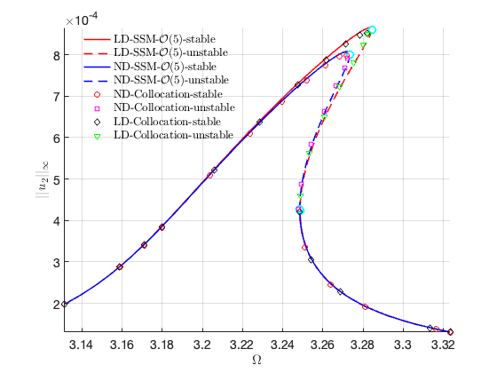 <pre class="codeinput">timings
</pre><pre class="codeoutput">
timings = 

  struct with fields:

       FRC_ND_O3: 6.2155
       FRC_ND_O5: 3.1502
       FRC_ND_O7: 3.2323
    cocoFRCbd_nd: 31.8611
       FRC_LD_O5: 2.3849
    cocoFRCbd_ld: 24.0015

</pre><p class="footer"><br/><a href="https://www.mathworks.com/products/matlab/">Published with MATLAB® R2023a</a><br/></p></div><!--
##### SOURCE BEGIN #####
%% Axially Moving Beam
%
%%
% We consider an axially moving beam under 1:3 internal resonance between the 
% first two bending modes. The equation of motion is given by
% 
% $$\ddot{\mathbf{u}}+(\mathbf{C}+\mathbf{G})\dot{\mathbf{u}}+\mathbf{f}(\mathbf{u},\dot{\mathbf{u}})=\epsilon\Omega^2\mathbf{g}\cos\Omega 
% t$$
% 
% where $\mathbf{G}^\top=-\mathbf{G}$ is a gyroscopic matrix. With viscoelastic 
% material model, the system has nonlinear damping. In addition, the beam is subject 
% to base excitation such that the forcing amplitude is a function of forcing 
% frequency.
% 
% In this notebook, we will calculate the forced response curve of the system 
% with/without the nonlinear damping taken into consideration to explore the effects 
% of nonlinear damping
%% Nonlinear Damping
% Setup Dynamical System

clear all;
n = 10;
[mass,damp,gyro,stiff,fnl,fext] = build_model(n,'nonlinear_damp');

%% 
% *Create model*
%% 
% * Given the assembled damping matrix $\mathbf{C}+\mathbf{G}$ is not Rayleigh 
% damping anymore, one should set the corresponding Options in DS to be false.
% * The BaseExcitation option in DS should be set true to account for the $\Omega$-dependent 
% forcing amplitude.

DS = <a href="../../../Library/DynamicalSystem/DynamicalSystem.html">DynamicalSystem</a>();
set(DS,'M',mass,'C',damp+gyro,'K',stiff,'fnl',fnl);
set(DS.<a href="../../../Library/Features/Options/Options.html">Options</a>,'Emax',6,'Nmax',10,'notation','multiindex');
set(DS.<a href="../../../Library/Features/Options/Options.html">Options</a>,'RayleighDamping',false,'BaseExcitation',true);

% Forcing
h = 1.5e-4; % h characterizes the vibration amplitude of base excitation. It plays the role of epsilon here
kappas = [-1; 1];
coeffs = [fext fext]/2;
DS.<a href="../../../Library/DynamicalSystem/add_forcing.html">add_forcing</a>(coeffs, kappas, h);
% Linear Modal analysis

[V,D,W] = DS.<a href="../../../Library/DynamicalSystem/linear_spectral_analysis.html">linear_spectral_analysis</a>();
%% 
% *Choose Master subspace*
% 
% Due to the 1:3 internal resonance, we take the first two complex conjugate 
% pairs of modes as the spectral subspace to SSM. So we hvae resonant_modes = 
% [1 2 3 4].

S = <a href="../../../Library/SSM/SSM.html">SSM</a>(DS);
set(S.<a href="../../../Library/Features/Options/Options.html">Options</a>, 'reltol', 1,'notation','multiindex');
resonant_modes = [1 2 3 4];
order = 3;
outdof = [1 2];

%%
% *Primary resonance of the first mode*
% 
% We consider the case that $\Omega\approx\omega_1$. Although the second mode 
% is not excited externally ($f_2=\langle \phi_2,f^\mathrm{ext}\rangle=0$), the 
% response of the second mode is nontrivial due to the modal interactions.

freqrange = [0.98 1.04]*imag(D(1));
set(S.<a href="../../../Library/Features/Options/Options.html">FRCOptions</a>, 'nCycle',500, 'initialSolver', 'fsolve');
set(S.contOptions, 'PtMX', 300, 'h0', 0.1, 'h_max', 0.2, 'h_min', 1e-3);
set(S.<a href="../../../Library/Features/Options/Options.html">FRCOptions</a>, 'coordinates', 'polar');
%% 
% We first compute the FRC with O(3,5,7) expansion of SSM and then check the 
% convergence of FRC with increasing orders. 

% O(3)
start = tic;
FRC_ND_O3 = S.<a href="../../../Library/SSM/SSM_isol2ep.html">SSM_isol2ep</a>('isol-nd-3',resonant_modes, order, [1 3], 'freq', freqrange,outdof);
timings.FRC_ND_O3 = toc(start);
% O(5)
sol = ep_read_solution('isol-nd-3.ep',1);
start = tic;
FRC_ND_O5 = S.<a href="../../../Library/SSM/SSM_isol2ep.html">SSM_isol2ep</a>('isol-nd-5',resonant_modes, order+2, [1 3],...
    'freq', freqrange,outdof,{sol.p,sol.x});
timings.FRC_ND_O5 = toc(start);
fig_ssm = gcf;
% O(7)
start = tic;
FRC_ND_O7 = S.<a href="../../../Library/SSM/SSM_isol2ep.html">SSM_isol2ep</a>('isol-nd-7',resonant_modes, order+4, [1 3],...
    'freq', freqrange,outdof,{sol.p,sol.x});
timings.FRC_ND_O7 = toc(start);
%% 
% Plot FRC at different orders in the same figure to observe the convergence 

FRCs = {FRC_ND_O3,FRC_ND_O5,FRC_ND_O7};
thm = struct();
thm.SN = {'LineStyle', 'none', 'LineWidth', 2, ...
  'Color', 'cyan', 'Marker', 'o', 'MarkerSize', 8, 'MarkerEdgeColor', ...
  'cyan', 'MarkerFaceColor', 'white'};
thm.HB = {'LineStyle', 'none', 'LineWidth', 2, ...
  'Color', 'black', 'Marker', 's', 'MarkerSize', 8, 'MarkerEdgeColor', ...
  'black', 'MarkerFaceColor', 'white'};
color = {'r','k','b','m'};
figure(20);
ax1 = gca;
for k=1:3
    FRC = FRCs{k};
    SNidx = FRC.SNidx;
    HBidx = FRC.HBidx;
    FRC.st = double(FRC.st);
    FRC.st(HBidx) = nan;
    FRC.st(SNidx) = nan;
    % color
    ST = cell(2,1);
    ST{1} = {[color{k},'REPLACE_WITH_DASH_DASH'],'LineWidth',1.5}; % unstable
    ST{2} = {[color{k},'-'],'LineWidth',1.5};  % stable
    legs = ['SSM-$\mathcal{O}(',num2str(2*k+1),')$-unstable'];
    legu = ['SSM-$\mathcal{O}(',num2str(2*k+1),')$-stable'];
    hold(ax1,'on');
    <a href="../../../Library/Features/misc/plot_stab_lines.html">plot_stab_lines</a>(FRC.om,FRC.Aout_<a href="../../../Library/Features/frc/frc.html">frc</a>(:,1),FRC.st,ST,legs,legu);
    SNfig = plot(FRC.om(SNidx),FRC.Aout_<a href="../../../Library/Features/frc/frc.html">frc</a>(SNidx,1),thm.SN{:});
    set(get(get(SNfig,'Annotation'),'LegendInformation'),...
    'IconDisplayStyle','off');
    HBfig = plot(FRC.om(HBidx),FRC.Aout_<a href="../../../Library/Features/frc/frc.html">frc</a>(HBidx,1),thm.HB{:});
    set(get(get(HBfig,'Annotation'),'LegendInformation'),...
    'IconDisplayStyle','off');   
    xlabel('$\Omega$','Interpreter','latex'); 
    ylabel('$||u_1||_{\infty}$','Interpreter','latex'); 
    set(gca,'FontSize',14);
    grid on; axis tight; 
end
% Validation using collocation method from COCO

figure(fig_ssm); hold on
nCycles = 500;
coco = <a href="../../../Library/Features/Wrappers/cocoWrapper/cocoWrapper.html">cocoWrapper</a>(DS, nCycles, outdof);
set(coco.<a href="../../../Library/Features/Options/Options.html">Options</a>, 'PtMX', 1000, 'NTST',20, 'dir_name', 'bd_nd');
set(coco.<a href="../../../Library/Features/Options/Options.html">Options</a>, 'NAdapt', 0, 'h_max', 200, 'MaxRes', 1);
coco.initialGuess = 'linear';
start = tic;
bd_nd = coco.<a href="../../../Library/Features/Wrappers/cocoWrapper/extract_FRC.html">extract_FRC</a>(freqrange);
timings.cocoFRCbd_nd = toc(start)
%% Linear Damping
% *Setup Dynamical System*

n = 10;
[mass,damp,gyro,stiff,fnl,fext] = build_model(n,'linear_damp');

% Create model
DS = <a href="../../../Library/DynamicalSystem/DynamicalSystem.html">DynamicalSystem</a>();
set(DS,'M',mass,'C',damp+gyro,'K',stiff,'fnl',fnl);
set(DS.<a href="../../../Library/Features/Options/Options.html">Options</a>,'Emax',6,'Nmax',10,'notation','multiindex');
set(DS.<a href="../../../Library/Features/Options/Options.html">Options</a>,'RayleighDamping',false,'BaseExcitation',true);
DS.<a href="../../../Library/DynamicalSystem/add_forcing.html">add_forcing</a>(coeffs, kappas, h);
% Linear Modal analysis

[V,D,W] = DS.<a href="../../../Library/DynamicalSystem/linear_spectral_analysis.html">linear_spectral_analysis</a>();
%% 
% *Choose Master subspace* 

S = <a href="../../../Library/SSM/SSM.html">SSM</a>(DS);
set(S.<a href="../../../Library/Features/Options/Options.html">Options</a>, 'reltol', 1,'notation','multiindex');
resonant_modes = [1 2 3 4];
order = 5;
outdof = [1 2];
% Primary resonance of the first mode

freqrange = [0.98 1.04]*imag(D(1));
set(S.<a href="../../../Library/Features/Options/Options.html">FRCOptions</a>, 'nCycle',500, 'initialSolver', 'fsolve');
set(S.contOptions, 'PtMX', 300, 'h0', 0.1, 'h_max', 0.2, 'h_min', 1e-3);
set(S.<a href="../../../Library/Features/Options/Options.html">FRCOptions</a>, 'coordinates', 'polar');

sol = ep_read_solution('isol-nd-3.ep',1);
start = tic;
FRC_LD_O5 = S.<a href="../../../Library/SSM/SSM_isol2ep.html">SSM_isol2ep</a>('isol-ld-5',resonant_modes, order, [1 3],...
    'freq', freqrange,outdof,{sol.p,sol.x});
timings.FRC_LD_O5 = toc(start);
% validation using collocation method from COCO

nCycles = 500;
coco = <a href="../../../Library/Features/Wrappers/cocoWrapper/cocoWrapper.html">cocoWrapper</a>(DS, nCycles, outdof);
set(coco.<a href="../../../Library/Features/Options/Options.html">Options</a>, 'PtMX', 1000, 'NTST',20, 'dir_name', 'bd_ld');
set(coco.<a href="../../../Library/Features/Options/Options.html">Options</a>, 'NAdapt', 0, 'h_max', 200, 'MaxRes', 1);
coco.initialGuess = 'linear';
start = tic;
bd_ld = coco.<a href="../../../Library/Features/Wrappers/cocoWrapper/extract_FRC.html">extract_FRC</a>(freqrange);
timings.cocoFRCbd_ld = toc(start)
%% Comparison of FRC with/without nonlinear damping

% plot SSM results
FRCs = {FRC_LD_O5,FRC_ND_O5};
legs = {'LD-SSM-$\mathcal{O}(5)$-unstable','ND-SSM-$\mathcal{O}(5)$-unstable'};
legu = {'LD-SSM-$\mathcal{O}(5)$-stable','ND-SSM-$\mathcal{O}(5)$-stable'};
color = {'r','b'};
fig25 = figure;
fig26 = figure;
for k=1:2
    FRC = FRCs{k};
    SNidx = FRC.SNidx;
    HBidx = FRC.HBidx;
    FRC.st = double(FRC.st);
    FRC.st(HBidx) = nan;
    FRC.st(SNidx) = nan;
    % color
    ST = cell(2,1);
    ST{1} = {[color{k},'REPLACE_WITH_DASH_DASH'],'LineWidth',1.5}; % unstable
    ST{2} = {[color{k},'-'],'LineWidth',1.5};  % stable
    figure(fig25); hold on
    <a href="../../../Library/Features/misc/plot_stab_lines.html">plot_stab_lines</a>(FRC.om,FRC.Aout_<a href="../../../Library/Features/frc/frc.html">frc</a>(:,1),FRC.st,ST,legs{k},legu{k});
    SNfig = plot(FRC.om(SNidx),FRC.Aout_<a href="../../../Library/Features/frc/frc.html">frc</a>(SNidx,1),thm.SN{:});
    set(get(get(SNfig,'Annotation'),'LegendInformation'),...
    'IconDisplayStyle','off');  
    xlabel('$\Omega$','Interpreter','latex'); 
    ylabel('$||u_1||_{\infty}$','Interpreter','latex'); 
    set(gca,'FontSize',14);
    grid on, axis tight; 
    legend boxoff;
    figure(fig26); hold on
    <a href="../../../Library/Features/misc/plot_stab_lines.html">plot_stab_lines</a>(FRC.om,FRC.Aout_<a href="../../../Library/Features/frc/frc.html">frc</a>(:,2),FRC.st,ST,legs{k},legu{k});
    SNfig = plot(FRC.om(SNidx),FRC.Aout_<a href="../../../Library/Features/frc/frc.html">frc</a>(SNidx,2),thm.SN{:});
    set(get(get(SNfig,'Annotation'),'LegendInformation'),...
    'IconDisplayStyle','off'); 
    xlabel('$\Omega$','Interpreter','latex'); 
    ylabel('$||u_2||_{\infty}$','Interpreter','latex'); 
    set(gca,'FontSize',14);
    grid on; axis tight; 
    legend boxoff
end

% load coco solution
legs = {'LD-Collocation-unstable','ND-Collocation-unstable'};
legu = {'LD-Collocation-stable','ND-Collocation-stable'};

bd = bd_nd{:};
ndom   = coco_bd_col(bd,'omega'); 
ndamp1 = coco_bd_col(bd, 'amp1');
ndamp2 = coco_bd_col(bd, 'amp2');
ndst   = coco_bd_col(bd, 'eigs');
ndst = all(abs(ndst)<1,1);
logs  = [1 2 3 4:3:numel(ndst)-4 numel(ndst)-1 numel(ndst)];
ndamp1 = ndamp1(logs);
ndamp2 = ndamp2(logs);
ndom = ndom(logs);
ndst = ndst(logs);
figure(fig25); hold on
plot(ndom(ndst), ndamp1(ndst), 'ro', 'MarkerSize', 6, 'LineWidth', 1,...
    'DisplayName', 'ND-Collocation-stable'); 
plot(ndom(~ndst), ndamp1(~ndst), 'ms', 'MarkerSize', 6, 'LineWidth', 1,...
    'DisplayName', 'ND-Collocation-unstable');
figure(fig26); hold on
plot(ndom(ndst), ndamp2(ndst), 'ro', 'MarkerSize', 6, 'LineWidth', 1,...
    'DisplayName', 'ND-Collocation-stable'); 
plot(ndom(~ndst), ndamp2(~ndst), 'ms', 'MarkerSize', 6, 'LineWidth', 1,...
    'DisplayName', 'ND-Collocation-unstable');

bd = bd_ld{:};
ldom   = coco_bd_col(bd,'omega'); 
ldamp1 = coco_bd_col(bd, 'amp1');
ldamp2 = coco_bd_col(bd, 'amp2');
ldst   = coco_bd_col(bd, 'eigs');
ldst = all(abs(ldst)<1,1);
logs  = [1 2 3 4:3:numel(ldst)-4 numel(ldst)-1 numel(ldst)];
ldamp1 = ldamp1(logs);
ldamp2 = ldamp2(logs);
ldom = ldom(logs);
ldst = ldst(logs);
figure(fig25); hold on
plot(ldom(ldst), ldamp1(ldst), 'kd', 'MarkerSize', 6, 'LineWidth', 1,...
    'DisplayName', 'LD-Collocation-stable'); 
plot(ldom(~ldst), ldamp1(~ldst), 'gv', 'MarkerSize', 6, 'LineWidth', 1,...
    'DisplayName', 'LD-Collocation-unstable');
figure(fig26); hold on
plot(ldom(ldst), ldamp2(ldst), 'kd', 'MarkerSize', 6, 'LineWidth', 1,...
    'DisplayName', 'LD-Collocation-stable'); 
plot(ldom(~ldst), ldamp2(~ldst), 'gv', 'MarkerSize', 6, 'LineWidth', 1,...
    'DisplayName', 'LD-Collocation-unstable');
%%
timings
##### SOURCE END #####
--></body></html>